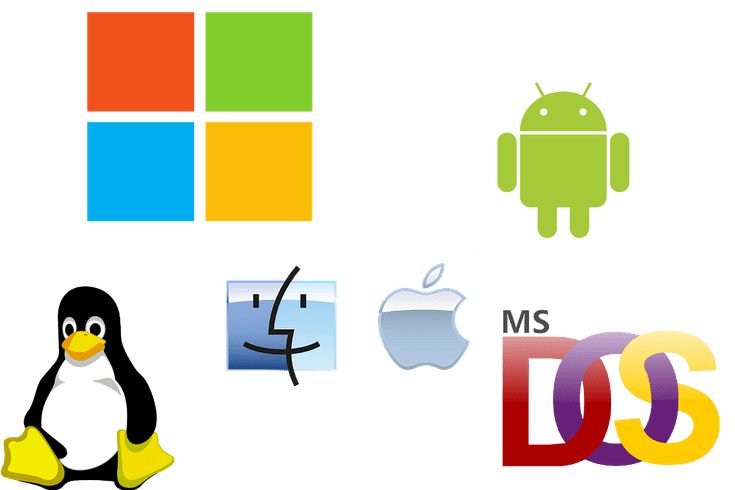

Curso De Sistemas Operativos (301402) 16-02 I 2021
Presentación personal
Unidad 1 Teoria S.O
PestañaTC1
Unidad 2 Admin De Recursos
PestañaTC2
Unidad 3 principales S.O
PestañaTC3
Evaluación Final
Enseñanza Lograda
Diferenciaremos los diferentes S.O para computadoras y telefonia movil.